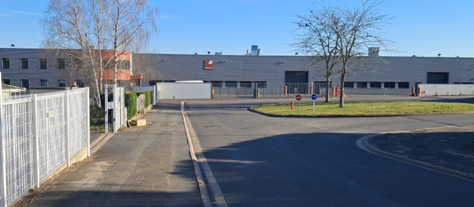

STAGE
- J’ai réalisé mon stage chez Project Usinage et Intégration, une entreprise spécialisée dans la mécanique de précision située à Vendôme. Ce stage m’a permis de découvrir le monde professionnel et industriel, en travaillant directement dans un service de l’entreprise chargé de la production de pièces en acier à l’aide de fraiseuses 5 axes. Mon projet principal a consisté à réaliser le programme d’un récupérateur de pièces pour tour, en utilisant le logiciel TopSolid. J’ai pu apprendre à programmer les trajectoires d’outil nécessaires à l’usinage, tout en respectant les contraintes techniques et les spécifications du plan. Après avoir validé le programme, j’ai participé à la phase d’usinage sur la machine, ce qui m’a donné une vision concrète de la fabrication et des exigences liées à la production industrielle. En complément, j’ai élaboré plusieurs documents essentiels au bon déroulement du processus de fabrication. J’ai créé une fiche de contrôle permettant de vérifier les dimensions et la qualité de la pièce usinée, une fiche listant tous les outils nécessaires à l’usinage pour faciliter la préparation de la machine, ainsi qu’une fiche détaillant la position exacte de la pièce dans l’outillage, afin d’assurer un montage précis et une répétabilité optimale. Cette expérience a été très enrichissante, car elle m’a permis de mettre en pratique mes connaissances théoriques, d’approfondir mes compétences en programmation et en usinage, et de mieux comprendre le fonctionnement quotidien d’une entreprise industrielle de mécanique de précision.
